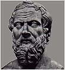
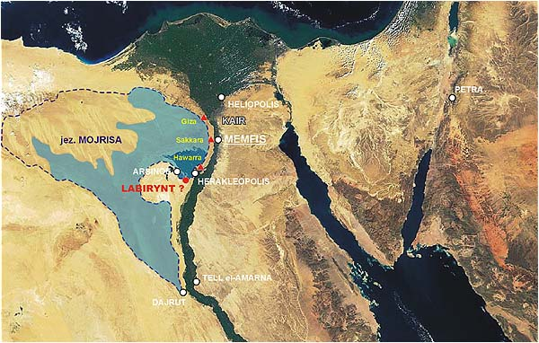
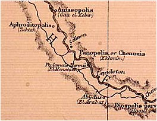
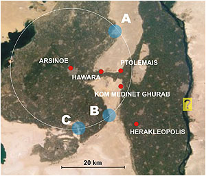
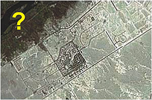

Je¶li kto¶ uwa¿a, ¿e piramidy s± najwiêksz± zagadk± staro¿ytnego Egiptu, to jak s±dzê
jest w b³êdzie. Opisy staro¿ytnych przekazuj± nam wiêksz± zagadkê ni¿ piramidy, o
wiele bardziej tajemnicz±, bo ogl±dan± w zamierzch³ej przesz³o¶ci, zaginion± i nie
odnalezion± do tej pory - egipski Labirynt. Jednak i on blednie przy najwiêkszej
budowie wszechczasów jak± jest jezioro Mojrisa. Je¶li moje rozumowanie jest s³uszne,
to mamy do czynienia z najwiêkszym przedsiêwziêciem hydrotechnicznym - ogromnym
zbiornikiem retencyjnym, dziêki któremu dolina Nilu sta³a siê najwiêkszym spichlerzem
staro¿ytno¶ci i bezpiecznym miejscem dla monumentalnych budowli Egiptu. W tej
koncepcji piramidy s± tylko elementem w wielkim systemie nawadniania i okie³znania
wylewów wielkiej rzeki.
Labirynt egipski stanowi chyba najwiêksz± zagadkê ostatnich dwóch tysiêcy lat. To,
¿e istnia³, ¶wiadcz± relacje naocznych ¶wiadków (ich relacje poni¿ej). Z opowie¶ci
staro¿ytnych wynika, ¿e by³ zbudowany z potê¿nych p³yt kamiennych.
HERODOT -
O Minie, pierwszym królu Egiptu, opowiadali kap³ani, ¿e naprzód budow± tamy ubezpieczy³
Memfis przed zalewami Nilu, [...] Skoro wiêc temu Minowi (opowiadaj±), pierwszemu królowi
Egiptu, odgrodzone ramiê Nilu zamieni³o siê w l±d sta³y, za³o¿y³ tam miasto, które teraz
nazywa siê Memfis, [...] a od zewn±trz woko³o niego wykopa³ jezioro, od rzeki ku pó³nocy
i zachodowi (bo w kierunku wschodnim sam Nil stanowi³ granicê); nadto wybudowa³ w tym
mie¶cie ¶wi±tyniê Hefaistosa, która jest wielka i jak najbardziej zas³uguje na wzmiankê.

DIODOR -
Po ¶mierci króla Egipcjanie ponownie wywalczyli sobie niepodleg³o¶æ i posadzili
na tronie swojego w³adcê, Mendesa, zwanego przez niektórych Marrosem. Nie dokona³
on wprawdzie ¿adnych wojennych czynów, wybudowa³ sobie jednak grobowiec, tak zwany
labirynt, który zdoby³ s³awê nie tyle z powodu wspania³o¶ci budowy, ile z powodu
jej niezwyk³ej pomys³owo¶ci. Kto bowiem do niego wszed³, ten nie tak ³atwo znajdzie
wyj¶cie, je¶li nie ma u boku zmy¶lnego przewodnika. Niektórzy powiadaj± te¿, ¿e Dedal
przyby³ do Egiptu, podziwia³ pomys³owo¶æ tego dzie³a i potem zbudowa³ Minosowi na
Krecie labirynt, podobny do egipskiego, w którym wed³ug legendy przebywa³ Minotaur.
Labirynt na Krecie znikn±³ ca³kowicie, nie wiadomo czy dlatego, ¿e w³adcy kazali go
rozebraæ, czy te¿ czas zniszczy³ owe dzie³o, natomiast ca³o¶æ budowli egipskiej po
dzi¶ dzieñ przetrwa³a w stanie nienaruszonym.
W dziesiêæ pokoleñ po wymienionym wy¿ej królu w³adanie nad Egiptem obj±³ Mojris i
wybudowa³ w Memfis pó³nocne przedsionki [...] Kaza³ te¿ wykopaæ o dziesiêæ schojnów
na pó³noc od miasta jezioro nadzwyczajny po¿ytek daj±ce i o niewiarygodnej wprost
wielko¶ci. Jego obwód wynosiæ mia³ bowiem 3600 stadiów (ok. 643,5 km) i g³êboko¶æ
przewa¿nie 50 s±¿ni (ok. 90 m). Kto zatem zastanowiwszy siê nad ogromem tego dzie³a,
nie zada sobie pytania, ile tysiêcy ludzi przez ile lat musia³o przy nim pracowaæ."
STRABON -
Jezioro Mojrisa przez swoj± wielko¶æ i g³êboko¶æ nadaje siê zatem do tego, by w
czasie przyboru Nilu przyj±æ przelewaj±ce siê wody [...] u obu uj¶æ kana³u znajduj±
siê te¿ jednak ¶luzy, którymi budowniczowie kieruj± wp³ywem i wyp³ywem wody.
Ponadto
znajduje siê tu tak¿e labirynt, daj±ce siê porównaæ z piramidami dzie³o budowlane,
a obok grobowiec króla, który kaza³ wybudowaæ labirynt [...] jest tam tyle otoczonych
kolumnadami i przylegaj±cych do siebie pa³acowych sal, wszystkie w jednym szeregu i
wszystkie przy jednej ¶cianie [...] Przed wej¶ciami znajduje siê wiele d³ugich, krytych
korytarzy, które maj± miêdzy sob± krête po³±czenia, tak ¿e bez przewodnika ¿aden obcy
nie zdo³a³by odnale¼æ wej¶cia czy wyj¶cia z ka¿dej sali.
PLINIUSZ STARSZY -
"Powiedzmy i o labiryntach, bo to chyba najbardziej niesamowite dzie³o wzniesione
ludzkim kosztem, choæ bynajmniej - wbrew temu, co by mo¿na przypuszczaæ - niefantastyczne!
Jeden znajduje siê do dzisiaj w Egipcie, w nomie herakleopolitañskim. To podobno
pierwszy w ogóle labirynt, zbudowany przed 3600 laty przez faraona Petesucha,
czyli inaczej Tithoesa. Przeznaczenie budowli podaje siê rozmaicie. [...]
Nie ulega w±tpliwo¶ci, ¿e st±d w³a¶nie zaczerpn±³ Dedal wzór owego labiryntu,
który wybudowa³ na Krecie; ale jego na¶ladownictwo ograniczy³o siê tylko do
jednej setnej czê¶ci tego¿ [...] To by³ drugi labirynt po egipskim. Trzeci
jest na Lemnos, czwarty w Italii. Wszystkie zbudowane by³y z polerowanego kamienia,
kryte sklepieniami, a przy tym egipski - rzecz dla mnie w wysokim stopniu
zdumiewaj±ca - ma przy wej¶ciu kolumny z marmuru paryjskiego. Reszta jest z
czerwonego granitu, ze spojonych z sob± olbrzymich g³azów, których nie potrafi±
obruszyæ stulecia, nawet przy walnej pomocy Herakleopolitów (bo ci nienawistnej
sobie budowli w dziwnie uparty sposób stale zagra¿ali).
Do¶æ ciekawie w tym kontek¶cie brzmi± dwie wypowiedzi - Strabona - "Je¶li wej¶æ na
dach, który nie znajduje siê na bardzo znacznej wysoko¶ci, to ujrzy siê kamienn±
powierzchniê z takich samych ogromnych p³yt." i Zajdlera (Atlantyda) - "Na terenie
Sahary znaleziono pokryte dzi¶ piaskami tajemnicze p³yty, które niektórzy uwa¿aj±
za resztki lotniska prehistorycznego.". Co z tego wynika? Zajdler pisze o czym¶
du¿ym powierzchniowo, a je¶li to nie lotnisko tylko dach du¿ej budowli? Szkoda,
¿e Zajdler nie podaje miejsca znaleziska.
Poni¿sze, wybrane przeze mnie, cztery fotografie satelitarne ukazuj± t± czê¶æ Egiptu,
w której prawdopodobnie nale¿a³oby poszukiwaæ jeziora Mojrisa, a przy okazji Labiryntu.
Labirynt, jak utrzymuj± staro¿ytni, le¿a³ nad jeziorem Mojrisa, st±d pierwszym
krokiem winno byæ umiejscowienie tego jeziora. Na ka¿dym zdjêciu widzimy plamê
w kszta³cie trójk±ta z wierzcho³kiem zwróconym na po³udnie le¿±c± na lewym brzegu
Nilu i zajmuj±c± spory obszar pustyni. W górnej czê¶ci widzimy te¿ kilka ³añcuchów
wzniesieñ na pustyni. Jest do¶æ prawdopodobne, by czê¶æ tego obni¿enia mog³o
zajmowaæ jezioro Mojrisa. Od piasków pustyni wyra¼nie odbija siê zielona czê¶æ
delty Nilu jak równie¿ sama dolina rzeki. A swoj± drog±, czy kto¶ zbada³ ju¿ wiek
delty rzeki? Czy jest pewno¶æ, ¿e Nil p³yn±³ w ten sposób od zawsze? Czy jest
mo¿liwe, ¿e Nil rozpocz±³ toczyæ swe wody w tym korycie dopiero po "wielkim
uskoku skorupy ziemskiej"? Je¶li tak, to badania wieku delty Nilu winny to wyja¶niæ.
Z relacji staro¿ytnych i badañ archeologów wiemy, ¿e delta w obecnym kszta³cie
istnieje ju¿ kilka tysiêcy lat i przechodzi³a raczej nieznaczne zmiany spowodowane
g³ównie trzêsieniami ziemi, do¶æ czêstymi w tym rejonie ¶wiata. Ostatnie
najwiêksze, te które rzekomo zatopi³o pa³ac Kleopatry i latarniê morsk± na
Faros mia³o mieæ miejsce w roku 365 pne. Dolina Nilu jest wyrze¼biona w pod³o¿u
skalnym na do¶æ du¿± g³êboko¶æ. Ile czasu, a przede wszystkim jakie ilo¶ci
wody dokona³y takiej erozji. Byæ mo¿e ma to zwi±zek z okresem wielkich opadów,
jakie mia³y miejsce w Egipcie przed tysi±cami lat, z tymi samymi opadami, które
dokona³y erozji Sfinksa. Takich badañ siê jednak nie prowadzi. Na mapce poni¿ej
stara³em siê okre¶liæ choæ w przybli¿eniu po³o¿enie legendarnego Labiryntu. Z
opowiadañ staro¿ytnych wiemy, ¿e:
Postanowili tak¿e pozostawiæ po sobie [dwunastu królów] wspólny pomnik, i stosownie do
tej decyzji zbudowali labirynt, który le¿y nieco powy¿ej Jeziora Mojrisa, ca³kiem blisko
tak zwanego Miasta Krokodyli. Ten ja widzia³em, a przewy¿sza on zaiste wszelki opis, bo
gdyby nawet kto¶ razem zliczy³ wzniesione przez Hellenów mury i wykonane przez nich
budowle, pokaza³oby siê, ¿e kosztowa³y one mniej trudu i wymaga³y mniejszych wydatków
ni¿ ten labirynt. A przecie¿ tak¿e ¶wi±tynie w Efezie i na Samos godne s± uwagi. By³y
wprawdzie i piramidy wy¿sze ponad wszelki opis, a ka¿da z nich dorównywa³a wielu i
wielkim helleñskim dzie³om; ale oczywi¶cie labirynt nawet piramidy prze¶cign±³.
Ma on mianowicie dwana¶cie krytych podwórców, których bramy stoj± naprzeciw siebie,
sze¶æ zwróconych jest na pó³noc, a sze¶æ na po³udnie, jedna obok drugiej; a od zewn±trz
otacza je jeden i ten sam mur. S± w nim dwojakie komnaty, jedne podziemne, drugie nad
tymi w górze, w liczbie trzech tysiêcy, po tysi±c piêæset z ka¿dego rodzaju. Otó¿
nadziemne komnaty sam widzia³em i przeszed³em, natomiast o podziemnych dowiedzia³em
siê tylko z opowiadania. Prze³o¿eni bowiem nad nimi Egipcjanie w ¿aden sposób nie
chcieli ich pokazaæ, o¶wiadczaj±c, ¿e s± tam groby królów, którzy pierwotnie ten
labirynt wybudowali, oraz ¶wiêtych krokodyli. Tak wiêc o podziemnych komnatach mówimy
tylko to, co¶my us³yszeli, a górne, wiêksze od dzie³ ludzkich, widzieli¶my sami.
A do tego naro¿a, w miejscu gdzie koñczy siê labirynt, przylega piramida
czterdziestos±¿niowa (ok. 72 m), na której wyryte s± wielkie figury. Droga do jej
wnêtrza idzie pod ziemi±.
Chocia¿ ten labirynt jest tak wielkim dzie³em, jeszcze
wiêkszy wzbudza podziw tak zwane Jezioro Mojrisa, obok którego ten labirynt jest
wybudowany [...] ¯e za¶ stworzy³y je i wykopa³y rêce ludzkie, ono samo to za¶wiadcza.
Bo mniej wiêcej w ¶rodku jeziora stoj± dwie piramidy, ka¿da wystaj±ca z wody na
piêædziesi±t s±¿ni (ok. 90 m), a pod wod± jest równie g³êboka ich podbudowa. Na
ka¿dej znajduje siê kamienny kolos, siedz±cy na tronie.
Bo najrozmaitsze wyj¶cia przez sale i zakrêty poprzez podwórce wzbudza³y w nas
tysi±czny podziw, gdy¶my z jednego podwórca przechodzili do komnat, a z komnat do
korytarzy, a z korytarzy do innych sal i znowu do innych podwórców z komnat. Dach
tego wszystkiego jest z kamienia, podobnie jak ¶ciany, ¶ciany za¶ pe³ne s± wyrytych
figur. Ka¿dy podwórzec jest doko³a otoczony kolumnami z bia³ego i jak naj¶ci¶lej
spojonego ze sob± kamienia.
[...] z ca³ego kraju, który teraz le¿y poni¿ej jeziora Mojrisa, a do którego
¿egluga od morza w górê rzeki trwa siedem dni, ani jeden punkt wówczas nie wystawa³
z wody.
Opowiadali te¿ krajowcy, ¿e to jezioro pod ziemi± ma uj¶cie do libijskiej Syrty,
ci±gn±c siê wzd³u¿ gór powy¿ej Memfis ku zachodowi w g³±b kraju libijskiego.
Najbardziej godne podziwu
jest jednak to, ¿e strop ka¿dej z komnat sk³ada siê z jednego kamienia i ¿e tak¿e
szersze strony krytych korytarzy wy³o¿one s± p³ytami z jednego kamienia nadzwyczajnej
wielko¶ci, przy czym nigdzie nie dodano ani drzewa, ani innego materia³u budowlanego.
Je¶li wej¶æ na dach, który nie znajduje siê na bardzo znacznej wysoko¶ci, to ujrzy siê
kamienn± powierzchniê z takich samych ogromnych p³yt [...] równie¿ ¶ciany zrobione s±
z kamienia nie mniejszej wielko¶ci. Przy koñcu [...] znajduje siê grobowiec,
czworoboczna, mierz±ca u ka¿dego boku oko³o cztery plethrony (ok. 120 m) piramida
o tej¿e wysoko¶ci. Imiê w niej pogrzebanego jest Ismandes [...]
Je¶li przep³yn±æ obok
tej budowli i jeszcze sto stadionów (ok. 18 km) dalej, napotyka siê miasto Arsinoe.
Nazywa³o siê dawniej Miastem Krokodyli [...] Nasz gospodarz, jeden z najznamienitszych
mê¿ów, który pokazywa³ nam tam ¶wiête przedmioty, poszed³ razem z nami do jeziora."
Poza tym s± tam te¿
¶wi±tynie wszystkich bóstw egipskich, a ponadto czterdzie¶ci kaplic Nemezys i
niezliczone piramidy o boku po 40 s±¿ni (ok. 72 m), sze¶æ zawieraj±cych u podstawy
arura. Porz±dnie ju¿ zmêczony marszem przychodzi cz³owiek do owych pozbawionych wyj¶cia
b³êdnych korytarzy. A tu s± jeszcze sale wysoko na piêtrach i kru¿ganki, z których siê
schodzi dziewiêædziesiêciu stopniami. Wewn±trz kolumny z porfirytu, wyobra¿enia bogów,
pos±gi królów, potworne jakie¶ postacie. Niektóre pa³ace tak s± po³o¿one, ¿e przy
otwarciu drzwi powstaje wewn±trz straszliwy grzmot, po wiêkszej te¿ czê¶ci wêdruje
siê tam w ciemno¶ciach. Poza murem le¿± znów dalsze ogromne budynki nale¿±ce do
labiryntu tzw. skrzyd³a. Dalej jeszcze inne, podziemne komory, do których wiod±
przekopane w ziemi korytarze."


• na pó³noc od Memfis znajdowa³y siê tzw.
"pó³nocne przedsionki" jeziora,
• jezioro le¿a³o po zachodniej stronie Nilu,
• jezioro liczy³o w obwodzie ok. 3600 stadiów, co
odpowiada mniej wiêcej 650 km,
• jezioro wybudowano po to, by zbieraæ wody powodziowe z
Nilu i regulowaæ nawadnianie delty Nilu,
• nadmiar wody móg³ byæ "zrzucany" bezpo¶rednio do
morza ¦ródziemnego, do zatoki Syrta
• labirynt znajdowa³ siê powy¿ej jeziora Mojrisa (chodzi
zapewne o po³o¿enia wzglêdem tafli jeziora),
• Labirynt le¿a³ w pobli¿u miasta krokodyli (Krokodylopolis,
Arsinoe) w odleg³o¶ci oko³o 18 km i by³ obiektem permanentnie zagro¿onym atakiem ze
strony mieszkañców Herakleopolis (konflikt religijny Egipcjan z Arabami?)

Stworzy³em prawdopodobny zarys brzegów jeziora gdzie granatowa przerywana linia zakre¶lona wokó³ niecki liczy sobie oko³o 1100 km. Po wy³±czeniu pasm wzgórz le¿±cych w pó³nocnej czê¶ci "nape³ni³em wod±" to hipotetyczne jezioro. D³ugo¶æ nowej linii brzegowej zawiera siê pomiêdzy 600 a 700 km, a wiêc jest zbli¿ona do d³ugo¶ci podanej przez Diodora. Jak powsta³o jezioro? Mówienie o jego budowie w ca³o¶ci jest chyba lekk± przesad±. W moim przekonaniu wk³ad budowniczych polega³ zapewne na zbudowaniu ¶luz oraz sztucznych brzegów tam, gdzie poziom gruntu by³ obni¿ony i nie zapewnia³ utrzymania wody w zamierzonych granicach. By³o to i tak gigantyczne przedsiêwziêcie geodezyjno-budowlane.
Jak nape³niono ten, licz±cy prawie 3057000 mln metrów sze¶ciennych zbiornik? Wlewaj±c do niego wodê z prêdko¶ci± 100 metrów sze¶ciennych na sekundê potrzeba by by³o oko³o 970 lat!!! Byæ mo¿e pomog³a sama przyroda. Je¶li przyj±æ, ¿e potop, który nawiedzi³ Egipt by³ spowodowany jednym z poprzednich "wielkich uskoków...", to jest ca³kiem prawdopodobne, ¿e miejsce to zosta³o zalane wodami morza ¦ródziemnego. Tysi±ce lat parowania i zasilania go sztucznym kana³em z Nilu byæ mo¿e uzdatni³o wodê na tyle, ¿e sta³a siê przydatna do uprawy roli. Nie mo¿na chyba te¿ wykluczyæ, ¿e cywilizacja Bogów dokona³a tego przy pomocy ¶rodków chemicznych.
Aby uchroniæ dolinê i deltê Nilu przed powodziami, nale¿a³o odbieraæ nadmiern± czê¶æ wody rzece w jej górnej czê¶ci zanim ta zaczê³a przybieraæ po opadach w g³êbi afrykañskiego l±du. Na mapie mo¿na ujrzeæ, ¿e w miejscowo¶ci Dairut (po drugiej stronie Nilu le¿y Tell el Amarna) Nil oddziela od siebie ma³± odnogê p³yn±c± wzd³u¿ rzeki na pó³noc. Jest to kana³ Józefa (Bahr Jusuf). Czy tu nale¿y szukaæ po³udniowej ¶luzy? Bardzo mo¿liwe choæ ma³o prawdopodobne. Z tego miejsca rozpoczyna siê moje hipotetyczne jezioro. Brak opisu jakie tereny mo¿na by³o nawadniaæ z jeziora Mojrisa utrudniæ mo¿e odnalezienie ¶luzy (lub ¶luz) pó³nocnych. Logicznie - nawadniana powinna byæ delta Nilu ze ¶luz w pobli¿u Memfis (blisko Memfis znajduje siê Giza). Zak³adaj±c, ¿e moje rozumowanie jest s³uszne, mo¿na w przybli¿eniu wskazaæ po³o¿enie Labiryntu, chocia¿ pisz±c te s³owa w roku 2003 jestem prawie pewien, ¿e miejsce po³o¿enia Labiryntu jest ju¿ doskonale znane. Skoro amerykañski satelita sporz±dzi³ mapê, na której widoczne s± koryta rzek pod piaskami Sahary, to na pewno poznano ju¿ miejsce po³o¿enia tego, najwa¿niejszego chyba zabytku na Ziemi. Dlaczego trzyma siê to w tajemnicy? Jestem chyba w stanie to wyja¶niæ - pieni±dze, pieni±dze i jeszcze raz pieni±dze. A ponadto najzwyklejsi z³odzieje, których interesuje tylko materia, a nie tre¶æ. Byæ mo¿e tak¿e, w zgodzie z teori± spiskow±, przeciwna jest liczna rzesza egiptologów boj±ca siê utraty presti¿u i dochodów z owoców dotychczasowej pracy.

Znalaz³em te¿ co¶ bardzo ciekawego. Fragment starszej i trochê dok³adniejszej mapy Egiptu, na której Nil rozga³êzia siê du¿o dalej na po³udnie. Czy co¶ mo¿e to zmieniæ. W moim przekonaniu tak. Poprzednio pisa³em, ¿e kana³ Józefa, a w³a¶ciwie jego pocz±tek, jest miejscem gdzie nale¿y szukaæ ¶luz po³udniowych jeziora Mojrisa. W tej sytuacji pocz±tek pobierania wody z Nilu nale¿a³o by przenie¶æ ni¿ej na po³udnie. Jak siê pó¼niej przekonamy, to jeszcze nie koniec poszukiwañ.Stawiam ciekaw±, byæ mo¿e obrazoburcz± hipotezê. Pamiêtamy zapewne opis tzw. Ozyrejonu w Abydos. Do dzi¶ nie wiadomo co to mog³o byæ i do czego mia³o s³u¿yæ. Zbyt toporne i za ma³e na ¶wi±tyniê, brak "pod³ogi" i stoj±ca tam wiecznie woda. Brak jakichkolwiek ornamentów czy inskrypcji. Ogólnie budowla sprawia wygl±d, jakby musia³a wytrzymaæ napór jaki¶ ogromnych si³ natury. Ponadto ca³o¶æ po³o¿ona jest o 15 m ni¿ej ni¿ pe³na przepychu i ornamentyki oraz du¿o wiêksza ¶wi±tynia faraona Setiego II, co byæ mo¿e ¶wiadczyæ o tym, ¿e Ozyrejon zbudowano wcze¶niej. Wokó³ budowli wykonano terasy, które jak s±dzê, mia³y zabezpieczaæ j± przed zasypaniem lub obsuwaniem siê ziemi podczas ulewnych deszczów czy trzêsieñ ziemi. ¦rodki zabezpieczaj±ce ¶wiadcz±, ¿e dla budowniczych by³a na pewno wa¿n± budowl±.
Hipotezê swoj± sformu³owa³bym pytaniem. Czy to przypadkiem nie s± pozosta³e fragmenty jakiej¶ budowli hydrotechnicznej, a wiêc mo¿e pozosta³o¶ci ¶luzy po³udniowej? Monumentalny, jakby toporny wygl±d budowli wskazuje, ¿e nie mia³a pe³niæ funkcji reprezentacyjnych lecz inn± nie znan± nam funkcjê. Nie ma w niej tak¿e "ludzkich" miejsc - osobnych pokoi czy komnat, pos±gów Bogów czy miejsc na o³tarze. Budowla zrekonstruowana (oczywi¶cie tylko na papierze) przez egiptologów posiadaæ mia³a przykrycie z prostych i ciê¿kich kamiennych p³yt. Egiptolodzy wysnuli tak¿e wniosek, ¿e poniewa¿ ci±gle sta³a tam woda po ¶wi±tyni poruszano siê ³ódk±. Wielkie brawa! Ale czy to by³a na prawdê ¶wi±tynia? Wygl±d bardziej predestynuje j± do typu "przemys³owego". Czy tak mog³y wygl±daæ ¶luzy jeziora Mojrisa lub jakie¶ urz±dzenie hydrotechniczne z nimi zwi±zane? Bardzo podobny wygl±d ma ¶wi±tynia "Chefrena" w Giza. Styl podpór i legarów jest prawie identyczny.
 |  |  |  |
|||
| Abydos tzw. Ozyrejon | Giza - "¶wi±tynia" Chefrena | |||||
Strabon pisa³ o Ozyrejonie: "... niezwyk³a budowla z litego kamienia ze ¼ród³em na du¿ej g³êboko¶ci. Schodzi siê tam wysoko sklepion± galeri± z ogromnych, doskonale obrobionych kamieni. Miejsce to po³±czone jest kana³em z wielk± rzek±...". Jest tak¿e ciekawe sk±d w Ozyrejonie bierze siê woda? Budowla znajduje siê powy¿ej Nilu a deszcz jest tam rzadko¶ci±. Woda gruntowa? A mo¿e nieznany podziemny zbiornik?
Ciekawie te¿ w tym kontek¶cie przedstawia siê rola egipskiego bóstwa imieniem Hapy. Jego zadaniem by³o regulowanie wzbieraniem wód Nilu, w okolicach I katarakty, w grocie ko³o Assuanu oraz dozorowanie wylewów Nilu w Dolnym Egipcie z "Domu Hapy" znajduj±cego siê na wyspie Roda na Nilu w pobli¿u Memfis. Ponadto dodatkowym zadaniem Boga o imieniu Chnum by³a opieka nad ¼ród³ami Nilu, które Egipcjanie umieszczali w okolicach I katarakty, a wiêc te¿ w pobli¿u Assuanu. Czy pod piaskami pustyni znajduje siê jeszcze jaki¶ nieodkryty kana³ biegn±cy a¿ od Assuanu do jeziora Mojrisa?
Staro¿ytne przekazy o skrzydlatej tarczy s³onecznej w Edfu mówi±, ¿e "Bog Ra ze swoim orszakiem wyl±dowa³ na zachód od Edfu, na wschód od kana³u Pechennu". Wniosek jaki siê nasuwa, to taki, ¿e Ra wyl±dowa³ pomiêdzy Edfu a jakim¶ istniej±cym kana³em na zachód od niego. Edfu jest znacznie powy¿ej Assuanu, a na zachód od niego dzi¶ rozci±ga siê pustynia. Czy chodzi tu o kana³ ³±cz±cy Nil (Assuan) z jeziorem Mojrisa? Prawdopodobnie.
Zastanawiaj±cy jest jeszcze jeden fakt. Wzd³u¿ ca³ego Nilu powy¿ej Assuanu, tu¿ nad jego brzegami, zbudowano olbrzymie kompleksy ¶wi±tynne i pa³acowe. ¯adnego nie otoczono wa³ami przeciwpowodziowymi. Budowano tak¿e na wyspach na rzece. Luksor, Karnak, Memfis, budowle na wyspie Elefantyna czy Roda. Czy kto¶ zagro¿ony corocznymi, potê¿nymi wylewami rzeki zdecydowa³ by siê na budowê w takich miejscach? Na pewno nie. Ci co budowali byli pewni, ¿e zalanie terenu budowy im nie grozi. Mieli przecie¿ ochronê w postaci potê¿nego zbiornika retencyjnego - jeziora Mojrisa.
DODATEK (15 pa¼dziernika 2005)

Ponadto jak wspomina Pliniusz Starszy: "Reszta jest z
czerwonego granitu, ze spojonych z sob± olbrzymich g³azów, których nie potrafi±
obruszyæ stulecia, nawet przy walnej pomocy Herakleopolitów (bo ci nienawistnej
sobie budowli w dziwnie uparty sposób stale zagra¿ali).", z czego mo¿na
wywnioskowaæ, ¿e Labirynt le¿a³ w pobli¿u Herakleopolis. Najlogiczniej pasuje tu obszar
oznaczony przeze mnie liter± "B". Do¶æ intryguj±co brzmi te¿ ostatnie zdanie u Pliniusza.
Czy w grê wchodzi³a walka o hegemoniê o¶rodka religijnego w¶ród samych Egipcjan,
czy te¿ w tle widaæ walkê dwóch ró¿nych religii? Trudno powiedzieæ.
Na zdjêciach satelitarnych w przesmyku pomiêdzy lini± Hawara-Ptolemais a Kom
Medinet Ghurab (niestety nie dysponujê wyra¼nymi zdjêciami) widoczne s± prawdopodobnie
p³yn±ce wody jako ciemne linie.

Ciekawszym jednak obiektem jest "co¶", co znajduje siê po drugiej stronie Nilu
(¿ó³ty prostok±t ze znakiem zapytania). Do z³udzenia przypomina tajemnicze obiekty
znajduj±ce siê obok Gizy, które opisywa³em jako "Kosmodrom Giza?". D³ugo¶æ obiektu
wynosi kilka kilometrów. Czê¶æ tego terenu
wygl±da na zamieszka³y, ale nie s³ysza³em o pracach badawczych w tamtym rejonie.
Czy nie czas zaj±æ siê koncepcj± "hydroenergetyczn±"? To nie religia i kap³ani stanowi³y o
potêdze Egiptu, o jego potêdze decydowa³a gospodarka rolna doliny Nilu, a t± z kolei
regulowa³ potê¿ny system nawadniaj±cy - jezioro Mojrisa i ca³y system hydroenergetyczny
jemu podporz±dkowany. Trzeba baczniej zacz±æ siê przygl±daæ lewemu brzegowi Nilu
od Giza po Assuan i szukaj±c uj¶æ wodnych oraz starych kana³ów nawadniaj±cych u³o¿yæ
te puzzle w jedn± logiczn± ca³o¶æ.